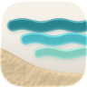
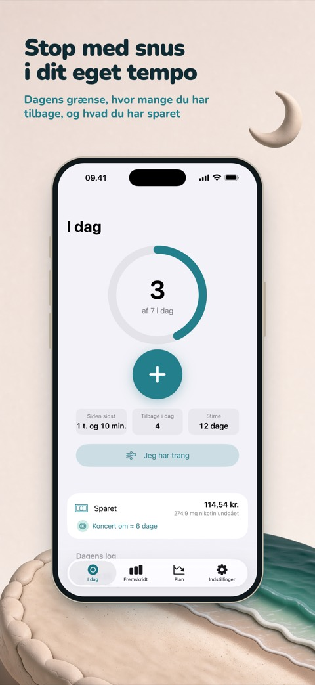
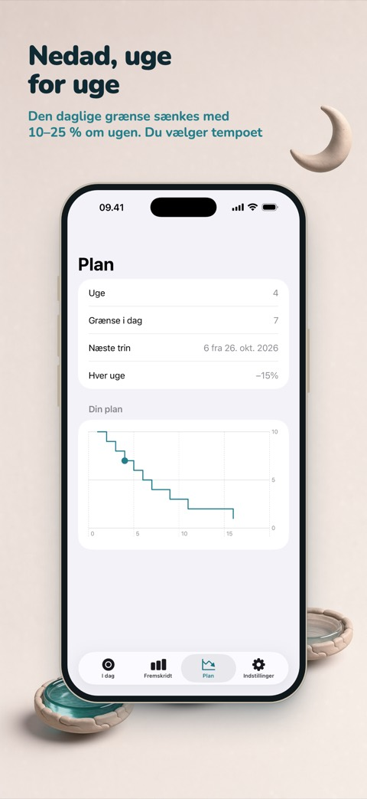
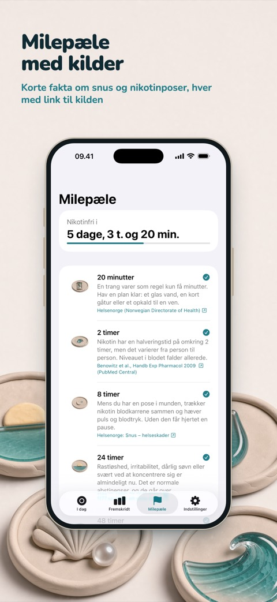

Stop med snus i dit eget tempo
Ebb er en iPhone-app til dig, der vil skære ned på eller stoppe med nikotinposer eller brun snus. Log en pose med et tryk, følg en plan, der trapper ned uge for uge, og se, hvordan de penge, du sparer, bliver til noget, du virkelig gerne vil have.



To måder at stoppe på
Trappe ned. Fortæl, hvor mange poser du bruger i dag. Ebb sætter en daglig grænse, der går ned med 10–25 % hver uge, og viser, hvor mange du har tilbage i dag. Går du over, bliver det noteret, uden straf. Med Ebb Pro kan du også trappe ned i styrke, for eksempel 6 → 3 → 0 mg.
Stop nu. En timer tæller fra din seneste pose. Tolv milepæle, fra 20 minutter til et år, forklarer, hvad der sker, hver med et link til kilden. Læs abstinenser dag for dag.
Log på et sekund
Log en pose fra widgetten på hjemmeskærmen eller låseskærmen, fra knappen i Kontrolcenter (iOS 18 og nyere), med Siri eller, med Ebb Pro, fra dit Apple Watch. Når trangen kommer, trykker du på "Jeg har trang" for en åndedrætsøvelse på 3 minutter, noterer, hvad der udløste den, og tæller hver trang, du kommer igennem.
Penge, du kan se
Ebb tæller det, du ikke længere bruger på snus, og gør det til drømme: en koncert, nye høretelefoner, en rejse. Skriv en pris, så viser Ebb, hvor hurtigt dine besparelser dækker den i dit tempo. Ebb tæller kun, appen rører aldrig dine penge.
Fakta, ikke skrækhistorier
Hver milepæl kommer fra en offentlig sundhedstjeneste, et universitet eller en videnskabelig oversigt og handler om snus og nikotinposer, ikke cigaretter. Ebb lover ikke, at lungerne bliver renere, eller at smagssansen kommer tilbage, for det er resultater om rygning.
Privat fra starten
Ingen konto og ingen reklamer. Dine registreringer bliver på din iPhone, og med Ebb Pro synkroniseres de via din egen iCloud. Anonym brugsstatistik hjælper os med at forbedre appen og kan slås fra i Indstillinger.
Gratis, og Pro hvis du vil have mere
Gratis: ubegrænset logning, begge tilstande, sparede penge, op til tre drømme, alle milepæle, den lille widget, widgets på låseskærmen, Kontrolcenter, Siri og åndedrætsøvelsen. Ebb Pro giver dig hele historikken og indsigt, egne planer, Apple Watch, alle widgets, iCloud-synkronisering og mere. Pro fås som årsabonnement eller som et engangskøb; priser og vilkår vises i App Store.
Ebb er til voksne over 18 år. Appen er ikke en medicinsk app og giver ikke medicinsk rådgivning.